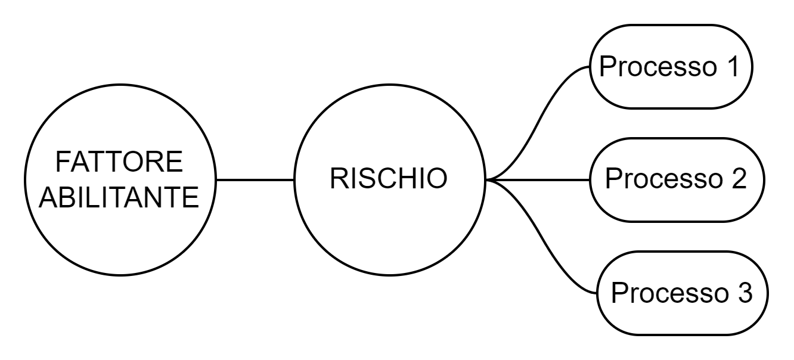

I fattori abilitanti sono elementi che concorrono all’individuazione delle misure di contrasto al rischio corruttivo.
Di seguito il registro dei fattori abilitanti alla versione 2.67 dell’applicazione “Rischi On Line”.
Tabella 1: Il registro dei fattori abilitanti
| FATTORI ABILITANTI |
|---|
| alterazione, manipolazione e utilizzo improprio di informazioni e documentazione |
| eccessiva regolamentazione e scarsa chiarezza della normativa di riferimento |
| esercizio prolungato ed esclusivo della responsabilità di un processo da parte di pochi o di un unico soggetto |
| inadeguata diffusione della cultura della legalità |
| inadeguatezza o assenza di competenze del personale |
| mancanza di controlli |
| mancanza di misure di prevenzione del rischio |
| mancanza di strumenti informatici |
| mancanza di trasparenza |
| scarsa responsabilizzazione interna |
| uso improprio o distorto della discrezionalità |
| procedure interne poco efficienti |
I fattori abilitanti sono elementi descrittivi, poco variabili nel tempo; per questo motivo non necessitano né di un codice univoco, né di una storicizzazione; quindi l’entità “fattore_abilitante” avrà semplicemente un id e un nome e non dipenderà dalla rilevazione, e quindi sarà un’entità forte.
Per quanto riguarda, invece, la relazione tra i fattori abilitanti, i rischi ed i processi, la situazione è più complessa. È necessario generare una relazione ternaria, dal momento che il significato dell’associazione tra il fattore abilitante ed il processo è contestuale al rischio e non può essere considerata indipendentemente da questo (e viceversa).
In altri termini, non è possibile associare un fattore abilitante ad un rischio e desumere i processi associati al fattore abilitante da quelli associati al rischio.
Ricavare i processi associati al fattore abilitante dai processi già associati al rischio connesso al fattore stesso non permette di ottenere la granularità sufficiente per rappresentare il dato di realtà.

Infatti, nel contesto di un dato processo, un dato fattore abilitante potrebbe essere associato ad un rischio cui il processo è esposto ma non ad un altro. Un esempio della situazione da rappresentare è quindi simile al seguente:
Tabella 2: Esempio di associazioni tra rischi e fattori abilitanti nel contesto di un dato processo
| PROCESSO 1 | |
|---|---|
| RISCHIO 1 | FA 1 |
| RISCHIO 2 |
FA1 FA2 |
| RISCHIO 3 |
FA3 FA4 |
| RISCHIO 4 | - |
Nell’esempio, ci troviamo nel Processo 1; esso è esposto a 4 rischi corruttivi;
il rischio 1 è associato al fattore abilitante 1;
il rischio 2 è associato al fattore abilitante 1 (di nuovo) e anche al fattore abilitante 2;
il rischio 3 è associato ai fattori abilitanti 3 e 4
il rischio 4 non è associato (ancora) ad alcun fattore abilitante.
Queste associazioni tra rischio e fattore abilitante sono contestuali al processo 1, ma nel processo 2, anche in presenza dei medesimi rischi, la situazione potrebbe essere totalmente diversa.
Occorre quindi una granularità molto fine nell’associazione tra rischio e fattore abilitante, che tenga conto del processo, perché tale associazione dipende da questi tre elementi.
Deve essere quindi disegnata una relazione ternaria.
Nell’analisi, era stata considerata la possibilità che uno stesso fattore abilitante non potesse essere ripetuto su più rischi nello stesso processo, ma poi questo vincolo è stato scartato perché poco sensato. Il vincolo inserito nella relazione, quindi, è solo sulla terna.